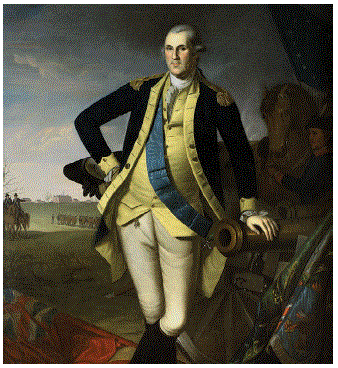
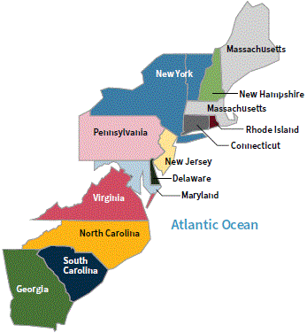

[p47]
In this chapter, you will learn about:
[p47]
En este capítulo, aprenderá sobre:
In 1775, the colonists went to war with Great Britain. This war was called the American Revolutionary War. During the American Revolutionary War, the colonists declared their independence from Great Britain, and they created the United States of America. The American Revolutionary War started in 1775. It ended in 1783 when Great Britain signed a treaty that said they agreed that the United States was an independent country.
The reason the colonists fought the British was because they did not have self-government.
When the colonists created the 13 colonies, each colony had its own colonial congress. A colonial congress was a legislative branch that made laws for each colony.
Great Britain allowed the colonies to have a colonial congress as long as they paid taxes to Great Britain, obeyed all other British laws, and provided Great Britain with materials like cotton, tobacco, and rice.
In the 1760s, Great Britain was fighting a war both in Europe and in North America. Great Britain needed help paying for the war. They passed laws that increased taxes on the 13 original colonies.
[p48]
[Photo: "Washington Taking Command of the American Army," by Currier & Ives. Courtesy of the National Archives, 532915.]
The colonists did not think it was fair that Great Britain raised their taxes without allowing representatives from the colonies to vote on it. Many colonists began to protest against the taxes because they thought it was not fair to have taxation without representation.
Great Britain responded by passing laws to punish the colonists. Great Britain made the colonists pay more taxes and made the colonial congresses illegal. These taxes and laws made the colonists even angrier. Many colonists no longer wanted to be part of Great Britain. They wanted to create their own country and govern themselves.
In 1775, colonists in Massachusetts began fighting the British. Soon, all 13 original colonies were fighting against Great Britain. The colonists created an army, and George Washington was named the general of the colonial army during the American Revolutionary War. This is one reason that George Washington is called the "Father of Our Country".
[Photo: "George Washington at Princeton," by Charles Willson Peale. Courtesy of the U.S. Senate.]
En 1775, los colonos fueron a la guerra con Gran Bretaña. Esta guerra se llamó la Guerra Revolucionaria Americana. Durante la Guerra Revolucionaria Americana, los colonos declararon su independencia de Gran Bretaña, y crearon los Estados Unidos de América. La Guerra Revolucionaria Americana comenzó en 1775. Terminó en 1783 cuando Gran Bretaña firmó un tratado en el que acordaron que los Estados Unidos era un país independiente.
La razón por la que los colonos lucharon contra los británicos fue porque no tenían autogobierno.
Cuando los colonos crearon las 13 colonias, cada colonia tenía su propio congreso colonial. Un congreso colonial era una rama legislativa que hacía las leyes de cada colonia.
Gran Bretaña permitía a las colonias tener un congreso colonial siempre y cuando pagaran impuestos a Gran Bretaña, obedecieran todas las demás leyes británicas y proporcionaran a Gran Bretaña materiales como algodón, tabaco y arroz.
En la década de 1760, Gran Bretaña estaba luchando en una guerra tanto en Europa como en América del Norte. Gran Bretaña necesitaba ayuda para pagar la guerra. Aprobaron leyes que aumentaron los impuestos a las 13 colonias originales.
[p48]
[Foto: "Washington asumiendo el mando del ejército americano", por Currier & Ives. Cortesía de los Archivos Nacionales, 532915.]
Los colonos no pensaban que era justo que Gran Bretaña aumentara sus impuestos sin permitir que los representantes de las colonias votaran al respecto. Muchos colonos comenzaron a protestar contra los impuestos porque pensaban que no era justo tener impuestos sin representación.
Gran Bretaña respondió aprobando leyes para castigar a los colonos. Gran Bretaña hizo que los colonos pagaran más impuestos e hizo que los congresos coloniales fueran ilegales. Estos impuestos y leyes enojaron aún más a los colonos. Muchos colonos ya no querían ser parte de Gran Bretaña. Querían crear su propio país y gobernarse a sí mismos.
En 1775, los colonos en Massachusetts comenzaron a luchar contra los británicos. Pronto, las 13 colonias originales estaban luchando contra Gran Bretaña. Los colonos crearon un ejército, y George Washington fue nombrado el general del ejército colonial durante la Guerra Revolucionaria Americana. Esta es una razón por la que George Washington es llamado el "Padre de Nuestra Nación".
[Foto: "George Washington en Princeton", por Charles Willson Peale. Cortesía del Senado de los Estados Unidos.]
[p49]
The Declaration of Independence was adopted on July 4, 1776. The Declaration of Independence announced our independence from Great Britain. This is why we celebrate Independence Day on July 4th.
Another word for "Declaration" is "statement." Another word for "Independence" is "freedom." The Declaration of Independence is a "statement of freedom."
Thomas Jefferson wrote the Declaration of Independence.
In the Declaration of Independence, Thomas Jefferson wrote that everyone has the right to:
[Photo: The Declaration of Independence. Courtesy of the National Archives.]
[Photo: In "Declaration of Independence," by John Trumbull, Thomas Jefferson and his committee present the formal statement of independence from Great Britain. Courtesy of the National Archives.]
[Photo: Assembly room of Independence Hall where the Declaration of Independence and the U.S. Constitution were both signed. Courtesy of the National Park Service.]
When the colonists adopted the Declaration of Independence, they created the United States of America. The 13 original colonies became the 13 original states.
The 13 original states are:
[Map: The 13 original states along the Atlantic Ocean coast.]
[p49]
La Declaración de Independencia fue adoptada el 4 de julio de 1776. La Declaración de Independencia anunció nuestra independencia de Gran Bretaña. Por eso celebramos el Día de la Independencia el 4 de julio.
Otra palabra para "Declaración" es "declaración" o "proclamación." Otra palabra para "Independencia" es "libertad." La Declaración de Independencia es una "declaración de libertad."
Thomas Jefferson escribió la Declaración de Independencia.
En la Declaración de Independencia, Thomas Jefferson escribió que todos tienen el derecho a:
[Foto: La Declaración de Independencia. Cortesía de los Archivos Nacionales.]
[Foto: En "Declaración de Independencia", por John Trumbull, Thomas Jefferson y su comité presentan la declaración formal de independencia de Gran Bretaña. Cortesía de los Archivos Nacionales.]
[Foto: Sala de reuniones de Independence Hall donde se firmaron tanto la Declaración de Independencia como la Constitución de los Estados Unidos. Cortesía del Servicio de Parques Nacionales.]
Cuando los colonos adoptaron la Declaración de Independencia, crearon los Estados Unidos de América. Las 13 colonias originales se convirtieron en los 13 estados originales.
Los 13 estados originales son:
[Mapa: Los 13 estados originales a lo largo de la costa del Océano Atlántico.]
[p50]
The United States stopped fighting with Great Britain in 1781. The British Army surrendered to the United States at the Battle of Yorktown in the state of Virginia. There was no more fighting, but the American Revolutionary War did not officially end until the U.S. and Great Britain signed a treaty in 1783. In the treaty, Great Britain agreed that the United States won the American Revolutionary War and that the United States was an independent nation.
[Photo: American, British and Hessian soldiers fight furiously at the Siege of Yorktown. Courtesy of the Library of Congress.]
Benjamin Franklin was a Founder who was famous for many things. One thing Benjamin Franklin was famous for was being a diplomat. A "diplomat" is someone who travels to other countries to represent the United States. Benjamin Franklin was the diplomat who negotiated the treaty with Great Britain in 1783.
Other answer choices for this question:
[Photo: Benjamin Franklin]
[p50]
Los Estados Unidos dejaron de luchar con Gran Bretaña en 1781. El Ejército Británico se rindió ante los Estados Unidos en la Batalla de Yorktown en el estado de Virginia. No hubo más combates, pero la Guerra Revolucionaria Americana no terminó oficialmente hasta que los Estados Unidos y Gran Bretaña firmaron un tratado en 1783. En el tratado, Gran Bretaña acordó que los Estados Unidos ganaron la Guerra Revolucionaria Americana y que los Estados Unidos era una nación independiente.
[Foto: Soldados americanos, británicos y hessianos luchan furiosamente en el Sitio de Yorktown. Cortesía de la Biblioteca del Congreso.]
Benjamin Franklin fue un Fundador famoso por muchas cosas. Una cosa por la que Benjamin Franklin era famoso era ser diplomático. Un "diplomático" es alguien que viaja a otros países para representar a los Estados Unidos. Benjamin Franklin fue el diplomático que negoció el tratado con Gran Bretaña en 1783.
Otras opciones de respuesta para esta pregunta:
[Foto: Benjamin Franklin]